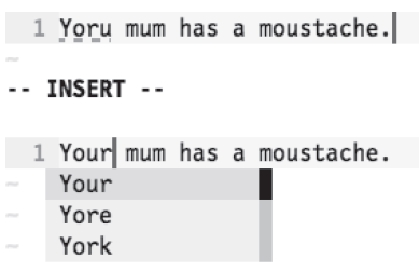

）。我们还可以通过<C-x><C-s>实现同样的功能，该命令更易于输入。在下图中，两组屏幕截图分别展示了触发<C-x>s命令前后的情况。
）。我们还可以通过<C-x><C-s>实现同样的功能，该命令更易于输入。在下图中，两组屏幕截图分别展示了触发<C-x>s命令前后的情况。技巧121在插入模式下更正拼写错误
Vim的拼写自动补全功能甚至允许我们在不离开插入模式的情况下，更正拼写错误。
想象一下这样的情景：我们刚刚输入完一行文本，却突然发现位于几个单词之前的地方出现了一处拼写错误。该怎么办呢？
准备工作
以下技巧要求我们必须启用拼写检查器：
➾ :set spell
通常做法：切换到普通模式
为了更正这一处拼写错误，我们可以先切换到普通模式，再通过[s命令跳回到发生拼写错误的地方，最后用1z=将其更正过来。在完成改正工作之后，我们可以通过A命令切回到插入模式，并跳到刚才的位置继续编辑。
快捷方式：利用拼写自动补全功能
还有另外一种方式，即在插入模式下通过<C-x>s命令更正拼写错误，该命令会触发一个特殊的自动补全功能（参见:h compl-spelling）。我们还可以通过<C-x><C-s>实现同样的功能，该命令更易于输入。在下图中，两组屏幕截图分别展示了触发<C-x>s命令前后的情况。
注意：我们自始至终处于插入模式下：

自动补全单词列表所提供的补全建议与我们在技巧118中通过z= 命令所获得的结果完全一致。
当我们触发某个自动补全命令时，Vim通常会在当前光标所在的位置提供如何完成单词的补全建议。但对于<C-x>s则有所不同。首先，Vim会从光标位置开始进行反向扫描，直到发现一处拼写错误为止；然后，它再根据更正建议创建单词列表，并将它们显示在弹出式菜单中。我们可以通过技巧112中所介绍的任何一种方法来选择最终的结果。
当某行文本出现的拼写错误不止一处时，<C-x>s命令才能充分地发挥出其优势。同样以上图所示的内容为例，假设我们运行了:set spelllang=en_us，则单词“moustache”也将被标记为拼写错误。而如果一开始我们就处于插入模式下，且光标位于行末，则只需输入两次<C-x>s，就可以一举将这两处拼写错误更正过来了。你也试一试吧。简直太酷了！